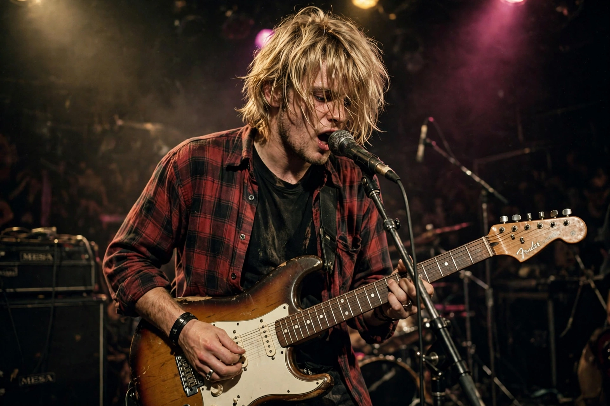

| Born | Kurt Donald Cobain, February 20, 1967, Aberdeen, Washington, U.S. |
|---|---|
| Died | April 5, 1994 (aged 27), Seattle, Washington, U.S. |
| Occupation | Singer, songwriter, guitarist |
| Years active | 1982–1994 |
| Spouse | Courtney Love (m. 1992) |
| Children | Frances Bean Cobain |
| Musical career | Genres: Alternative rock, grunge, punk rock. Instruments: vocals, guitar. Labels: Sub Pop, DGC. Member of: Nirvana |
Kurt Donald Cobain (February 20, 1967 – April 5, 1994) was an American musician who was the lead vocalist, guitarist, primary songwriter, and a founding member of the rock band Nirvana. Through his angsty songwriting and anti-establishment persona, Cobain's compositions widened the thematic conventions of mainstream rock and cemented him as an icon of Generation X.
Cobain was born in Aberdeen, Washington, and grew up in the logging town between Aberdeen and Montesano. His parents' divorce when he was nine deeply affected him. A hyperactive child briefly prescribed Ritalin, he found his voice in punk rock; the Melvins' Buzz Osborne introduced him to the scene, and in 1987 Cobain formed Nirvana with Krist Novoselic in Aberdeen.
Nirvana released its debut album Bleach on the Seattle independent label Sub Pop in 1989. With drummer Dave Grohl joining in 1990, the band signed to DGC Records and released Nevermind (1991); its lead single "Smells Like Teen Spirit" unexpectedly propelled grunge and alternative rock into the mainstream. The follow-up In Utero (1993), recorded with Steve Albini, was a rawer, abrasive record that nonetheless debuted at number one. Cobain was an ambivalent star, openly championing underground and feminist causes — influenced by bands like the Raincoats and Bikini Kill — while battling chronic stomach pain and heroin addiction.
Cobain died by suicide at his Seattle home on April 5, 1994, aged 27. His death, like that of Hendrix, Joplin, and Morrison before him, fed the myth of the "27 Club" and fixed his image as the reluctant spokesman of his generation. Nirvana was inducted into the Rock and Roll Hall of Fame in 2014, its first year of eligibility, and Cobain's journals, artwork, and home recordings have continued to appear posthumously.